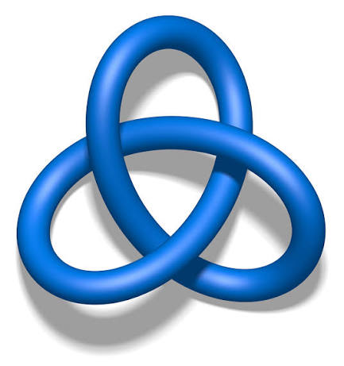

About
I’m an undergraduate student at the University of Ottawa. I am currently working in the realm of knot theory, as I enjoy the intersection between pure theory and computation that this field offers.
Outside of math, I like reading science fiction, spending time outdoors, and playing games of skill like poker.
Research interests
My main interest is currently knot theory, especially knot Floer homology and the computational side of knot invariants. I have been focused on creating programs to compute these invariants for (1,1)-knots.
Publications and preprints
-
Computing the Knot Floer Homology of (1,1)-knots
-
An Infinite Family of Linearly Independent Knots in the Smooth Concordance Group